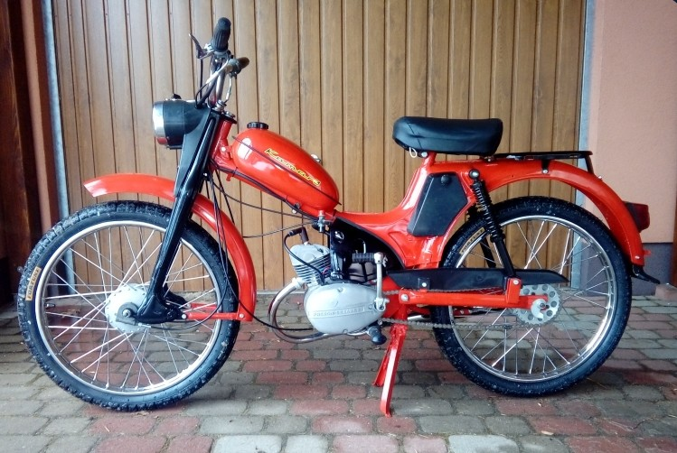
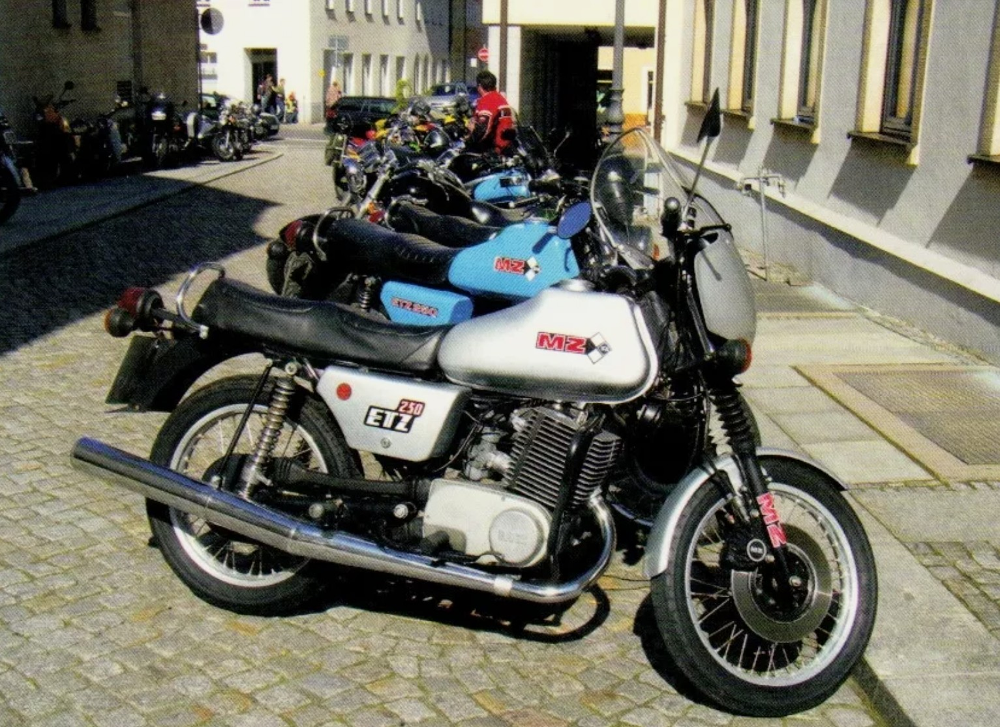
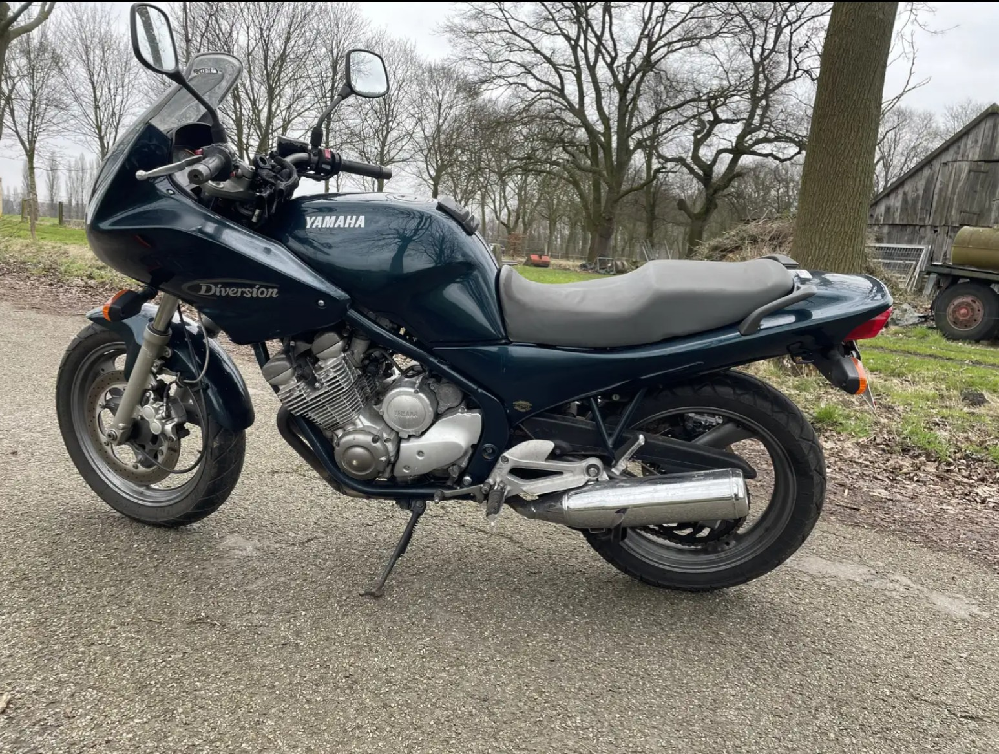
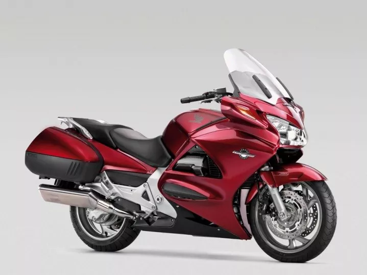

Moje hobby od dzieciństwa to motocykle.
Pasja ta zaczęła się, gdy miałem zaledwie dziewięć lat – to wtedy mój tata po raz pierwszy nauczył mnie jeździć.
Pamiętam ten moment doskonale: emocje, dreszczyk adrenaliny i uczucie wolności, które poczułem, gdy po raz pierwszy chwyciłem za kierownicę i poczułem wiatr na twarzy.
Od tamtej chwili motocykle stały się nieodłącznym elementem mojego życia.
Z biegiem lat zdobywałem coraz więcej doświadczenia, poznawałem różne modele motocykli i uczyłem się ich mechaniki.
Uwielbiam zarówno klasyczne jednoślady, jak i nowoczesne maszyny pełne zaawansowanej technologii.
Jazda motocyklem daje mi niesamowite poczucie swobody – to chwila, w której liczy się tylko droga, maszyna i ja.
Do dziś motocykle pozostają moją pasją. Każda trasa to nowe wyzwanie, nowe emocje i niepowtarzalne przeżycia.
Uwielbiam podróżować, odkrywać nowe miejsca i cieszyć się każdą chwilą spędzoną na dwóch kółkach.
Dla mnie to nie tylko hobby, ale styl życia, który pozwala mi oderwać się od codzienności i poczuć prawdziwą wolność.



